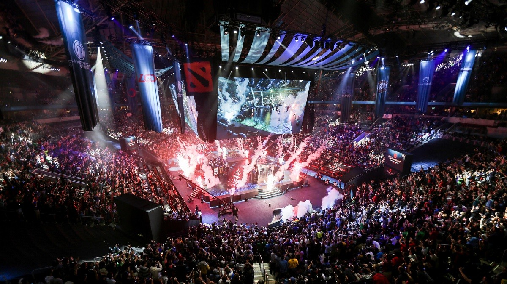

Турнир по игре Dota 2, организованный компанией Valve. Битва за Эгиду чемпионов состоялась на территории Канады, Ванкувер в Роджерс-арена — с 20 по 25 августа 2018 года. Ежегодный турнир состоялся в восьмой раз подряд и традиционно стал крупнейшим соревнованием по Dota 2 за год.
Участие в турнире приняли восемнадцать команд, восемь команд с наивысшим показателем DPC баллов в сезоне получили прямые приглашения на The International 2018. Первой командой получившей прямое приглашение стала Virtus.Pro. Другие десять команд определились в открытых и региональных отборочных. Открытые отборочные — с 14 по 17 июня 2018 года. Региональные отборочные — с 18 по 25 июня 2018 года. Вскоре после того, как 10 июня 2018 года на «China Dota 2 Supermajor» разыграли последние DPC баллы, основной костяк из 8 команд был сформирован, оставшиеся 10 мест заняли команды прошедшие отборочный этап.